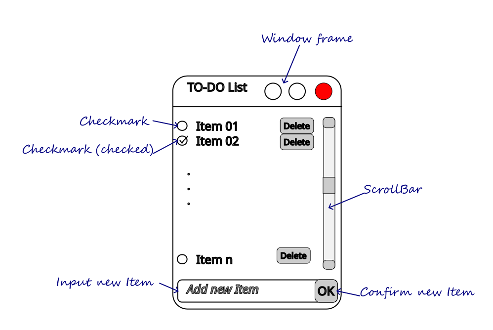
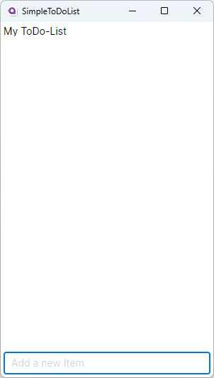
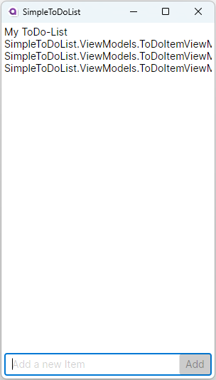
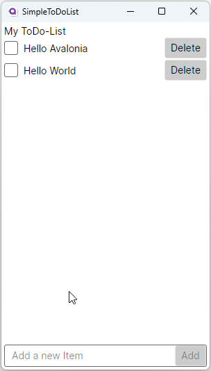
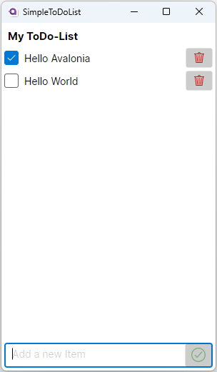

This example will show you how a simple ToDo-List App can be built using Avalonia in combination with the MVVM-Community-Toolkit.
Difficulty
🐥 Easy 🐥
Buzz-Words
ToDo-List, complete app, MVVM, CommunityToolkit.MVVM, source generator, styles, commands
Before we start
This sample assumes that you have basic knowledge about the following topics:
-
How to create a [new Avalonia project]
-
Some basics about C# and [XAML]
-
What the [MVVM pattern] (Model-View-ViewModel) is and how it works
-
What a [Command] is and how it works
-
What an [ObservableCollection] is and how it works
CommunityToolkit.MVVM
The [CommunityToolkit.MVVM] package is one of many third-party packages for MVVM apps. We will use it in this sample as it is very lightweight. In addition, it comes with built-in source generators, which allow us to write less boilerplate code.
For example, we can annotate private fields or partial properties with the [ObservableProperty] attribute, which will let the source generator create a property for us:
// Using the source generator:
[ObservableProperty]
public partial bool IsChecked {get; set;}
// Without using the source generator we would need to write:
private bool _isChecked;
public bool IsChecked
{
get { return _isChecked; }
set { SetProperty(ref _isChecked, value); }
}| If you want to learn more about how these source generators work, please see the Microsoft documentation on [MVVM source generators] and [.NET compiler source generators]. |
Preparation
Before we start with the implementation of the app, we need to define a list of requirements and a sketch of the UI.
Must-haves
-
The user must be able to view a list of to-do items.
-
All items must be easily discoverable.
-
The user must be able to check and uncheck the to-do items.
-
The user must be able to add new items.
-
The user must be able to delete an existing item.
Nice-to-haves
-
The user should have visual feedback when hovering a to-do item.
-
The user should have visual feedback if a new item can be added or not.
Sketch of UI layout

The Solution
| In this sample we will use the MVVM (Model-View-ViewModel) approach, where we will start with the Model and ViewModel first. |
Step 1: Create a new project
In your preferred IDE, create a new Avalonia MVVM project with the CommunityToolkit.MVVM toolkit. You can install the toolkit manually via [NuGet] if you are using the command line.
This tutorial shows Visual Studio in use. The exact file structure you see may vary if you use a different IDE.
For more information on creating new Avalonia projects, see the [Avalonia documentation].
Step 2: Set up the model
Inside your Models folder, add a new file ToDoItem.cs. This is the class file for the ToDoItem class, which is used to save and restore the user’s ToDo list.
Give the class two properties: one for the content of the item and one for whether it is checked or not.
/// <summary>
/// This is our Model for a simple ToDoItem.
/// </summary>
public class ToDoItem
{
/// <summary>
/// Gets or sets the checked status of each item
/// </summary>
public bool IsChecked { get; set; }
/// <summary>
/// Gets or sets the content of the to-do item
/// </summary>
public string? Content { get; set; }
}Step 3: Set up the view models
ToDoItem view model
Our next task is to create a ViewModel for our to-do items, which we will use as an intermediate layer between the View and the Model. Inside the folder ViewModels, add a new class ToDoItemViewModel, which inherits from ViewModelBase.
Important: If you want to use the source generators, remember to mark the class as partial.
|
using CommunityToolkit.Mvvm.ComponentModel;
namespace SimpleToDoList.ViewModels;
/// <summary>
/// This is a ViewModel which represents a <see cref="Models.ToDoItem"/>
/// </summary>
public partial class ToDoItemViewModel : ViewModelBase
{
/// <summary>
/// Gets or sets the checked status of each item
/// </summary>
// NOTE: This property is made without source generator. Uncomment the line below to use the source generator
// [ObservableProperty]
private bool _isChecked;
public bool IsChecked
{
get { return _isChecked; }
set { SetProperty(ref _isChecked, value); }
}
/// <summary>
/// Gets or sets the content of the to-do item
/// </summary>
[ObservableProperty]
public partial string? Content { get; set; }
}At this point, ToDoItemViewModel is not yet connected to the ToDoItem model.
In ToDoItemViewModel.cs, add a using statement to the top of the file to use the Models in your namespace.
using SimpleToDoList.Models;To create a new ToDoItemViewModel from an existing ToDoItem, add a constructor to the ViewModel class that takes the ToDoItem as an argument.
We also want to be able to create a new, empty ToDoItemViewModel. Therefore, we also add a parameterless constructor.
/// <summary>
/// Creates a new blank ToDoItemViewModel
/// </summary>
public ToDoItemViewModel()
{
// empty
}
/// <summary>
/// Creates a new ToDoItemViewModel for the given <see cref="Models.ToDoItem"/>
/// </summary>
/// <param name="item">The item to load</param>
public ToDoItemViewModel(ToDoItem item)
{
// Init the properties with the given values
IsChecked = item.IsChecked;
Content = item.Content;
}Lastly, the view model needs a way to get the updated model back, if the user makes changes to it. Add a method that does this to the ViewModel class:
/// <summary>
/// Gets a ToDoItem of this ViewModel
/// </summary>
/// <returns>The ToDoItem</returns>
public ToDoItem GetToDoItem()
{
return new ToDoItem()
{
IsChecked = this.IsChecked,
Content = this.Content
};
}See [ToDoItemViewModel] for the completed view model file.
Main view model
Avalonia templates automatically create MainViewModel.cs in a new project. Open this file to edit it.
Tip: If you see a property called Greeting, feel free to delete it. We don’t need it for this app.
|
Within the public partial class MainViewModel, add an ObservableCollection called ToDoItems. This collection will notify the UI whenever an item is added or removed. Only a getter is needed, as the property can be read-only.
You also need to add two using statements to the file to be able to use the ObservableCollection.
using System.Collections.ObjectModel;
using CommunityToolkit.Mvvm.ComponentModel;
namespace SimpleToDoList.ViewModels;
public partial class MainViewModel : ViewModelBase
{
/// <summary>
/// Gets a collection of <see cref="ToDoItem"/> which allows adding and removing items
/// </summary>
public ObservableCollection<ToDoItemViewModel> ToDoItems { get; } = new ObservableCollection<ToDoItemViewModel>();
}To add new items to the ToDoItems collection, we need a helper property. In the case of this to-do list, the helper property is only expected to accept a non-empty string as content to construct a new item.
In the MainViewModel, add a new observable property and give it a name such as NewItemContent. Give it a command called AddItemCommand, which adds the item if it is a non-empty string. The command and property will be created by the source generator provided by CommunityToolkit.MVVM so long as the MainViewModel is partial.
/// <summary>
/// Gets or set the content for new Items to add. If this string is not empty, the AddItemCommand will be enabled automatically
/// </summary>
[ObservableProperty]
[NotifyCanExecuteChangedFor(nameof(AddItemCommand))] // This attribute will invalidate the command each time this property changes
public partial string? NewItemContent { get; set; }Next step is to create a bool method or a property that indicates whether the AddItemCommand can execute, i.e., whether the string is empty:
/// <summary>
/// Returns if a new Item can be added. We require to have the NewItem some Text
/// </summary>
private bool CanAddItem() => !string.IsNullOrWhiteSpace(NewItemContent);Now you can add the Command itself. With CommunityToolkit.MVVM, you can use the [RelayCommand attribute] to generate a command from a void or a Task.
In this tutorial, AddItem is created as a void. Other than adding a new item to the ToDoItems collection, it also resets the NewItemContent property, so that the input field is cleared and ready for the next item.
Be sure to also add another using statement to the top of MainViewModel.cs to allow RelayCommand to be used.
using CommunityToolkit.Mvvm.Input;
...
/// <summary>
/// This command is used to add a new Item to the List
/// </summary>
[RelayCommand (CanExecute = nameof(CanAddItem))]
private void AddItem()
{
// Add a new item to the list
ToDoItems.Add(new ToDoItemViewModel() {Content = NewItemContent});
// reset the NewItemContent
NewItemContent = null;
}AddItemCommand makes it possible to add items to the collection, but we also want to be able to remove items from it. For that, a second command is needed.
Create another RelayCommand named RemoveItem. Pass the item to remove as a CommandParameter to specify what the command should remove.
Note: According to the app draft, we want to add the Delete button next to each item. Therefore, we don’t need to set CanExecute on the removal command, as we can be certain that the button only ever appears when there is a valid CommandParameter.
|
/// <summary>
/// Removes the given Item from the list
/// </summary>
/// <param name="item">the item to remove</param>
[RelayCommand]
private void RemoveItem(ToDoItemViewModel item)
{
// Remove the given item from the list
ToDoItems.Remove(item);
}See [MainViewModel] for the completed view model file.
Step 4: Set up the view
Note: Depending on the template you used, you may have a file called MainView.axaml as well as MainWindow.axaml. If this is the case, carry out the steps in this section in MainView.axaml. MainWindow will present the view automatically.
|
Let’s review the app design. The UI is intended to have a header at the top, a content body in the middle that occupies most of the space in the window, and a footer with an input field to add new items.
In Avalonia, each window accepts one control only. To have multiple controls in a view, you must nest them within a [layout control], such as a Panel or Grid. For this tutorial, use a Grid.
Tip: For more information on how to use grids, see the [Grid control reference].
|
<!-- Leave the root-Node untouched beside setting Width, Height and Padding -->
<Window xmlns="https://github.com/avaloniaui"
xmlns:x="http://schemas.microsoft.com/winfx/2006/xaml"
xmlns:vm="using:SimpleToDoList.ViewModels"
xmlns:d="http://schemas.microsoft.com/expression/blend/2008"
xmlns:mc="http://schemas.openxmlformats.org/markup-compatibility/2006"
mc:Ignorable="d"
Width="300" Height="500" Padding="4"
x:Class="SimpleToDoList.Views.MainWindow"
x:DataType="vm:MainViewModel"
Icon="/Assets/avalonia-logo.ico"
Title="SimpleToDoList">
<!-- We give a name to the root grid in order to access it later -->
<Grid RowDefinitions="Auto, *, Auto"
x:Name="Root">
<!-- This is our title text block. -->
<TextBlock Text="My ToDo-List" />
<ScrollViewer Grid.Row="1">
<!-- This ItemsControl show all added ToDoItems. -->
<!-- It needs to be placed inside a ScrollViewer because other than a ListBox it has not its own -->
<ItemsControl ItemsSource="{Binding ToDoItems}">
</ItemsControl>
</ScrollViewer>
<!-- This TextBox can be used to add new ToDoItems -->
<TextBox Grid.Row="2"
Text="{Binding NewItemContent}"
PlaceholderText="Add a new Item">
</TextBox>
</Grid>
</Window>Step 5: Running the app and making improvements
Adding a button
It is now possible to run the app, now that it has a view, model and view model set up. If you do that, you should see something similar to this:

The app has a title, an empty content body and an input field. We can enter text into the input field. However, there is no button to add it to the to-do list, and the content area stays empty as a consequence.
For the app to be usable, it must have a confirmation button. In Avalonia, a TextBox can have an InnerLeftContent or InnerRightContent, which can host a button. Use this property to add a Button that executes the AddItemCommand.
For convenience, you can also allow confirmation using the keyboard. To do this, set a [key binding].
Tip: Hotkeys can also be set to allow command execution from the keyboard. In this case, KeyBinding is preferred over HotKey, because HotKey applies to the whole view, whereas KeyBinding fits the expected behavior of only working when the TextBox is focused.
|
Modify the TextBox in MainWindow.axaml by setting an InnerRightContent within its tags. Place a Button as the content, and bind it to AddItemCommand. For the key binding, separately set a KeyBinding within the TextBox tags and also bind it to AddItemCommand.
You should end up with a Grid like this:
<TextBox Grid.Row="2"
Text="{Binding NewItemContent}"
PlaceholderText="Add a new Item">
<TextBox.InnerRightContent>
<Button Command="{Binding AddItemCommand}" >
Add
<!-- <PathIcon Data="{DynamicResource AcceptIconData}" Foreground="Green" /> -->
</Button>
</TextBox.InnerRightContent>
<!-- KeyBindings allow us to define keyboard gestures -->
<TextBox.KeyBindings>
<KeyBinding Command="{Binding AddItemCommand}" Gesture="Enter" />
</TextBox.KeyBindings>
</TextBox>Defining a data template
If you run the app again after adding the button, you can see that the window now has an Add button that is grayed out if the input field is empty and enabled if you start typing. You can now add items to the content area by clicking the button or pressing Enter.

At this point, if you try to add an item, you may notice that the actual text you enter is not displayed. Instead of something like "Item 1", you see the name of the ToDoItemViewModel`.
To make the app display the expected input, we must define an ItemTemplate for the ItemsControl, i.e., the control on row 1 of the Grid which displays the to-do list.
To create the data template, add an ItemTemplate within the ItemsControl tags. The ItemTemplate itself can then host a DataTemplate that takes data from the ToDoITemViewModel. In the DataTemplate, place a Grid that holds the controls with which to display the data from the view model.
Add a CheckBox to the Grid. Bind ToDoItemViewModel.Content as its Content and ToDoItemViewModel.IsChecked as its IsChecked status. Then, add a Button bound to RemoveItemCommand so that a "Delete" button is provided next to each list item.
Note: Because we set the DataTemplate to use vm:ToDoItemViewModel, only data from ToDoItemViewModel can be used in the ItemTemplate by default. However, RemoveItemCommand is in MainViewModel. To circumvent this, we can use [explicit type casting] to access the required data context.
<ItemsControl ItemsSource="{Binding ToDoItems}">
<ItemsControl.ItemTemplate>
<!-- The ItemTemplate defines how each item should be represented -->
<!-- Our Item will be represented by a CheckBox and a Delete-Button -->
<DataTemplate DataType="vm:ToDoItemViewModel">
<Grid ColumnDefinitions="*, Auto">
<CheckBox Content="{Binding Content}"
IsChecked="{Binding IsChecked}" />
<!-- Note how we use the Root-Grid to get the MainViewModel here. As we use compiled bindings we have to cast the DataContext -->
<Button Command="{Binding #Root.((vm:MainViewModel)DataContext).RemoveItemCommand}"
CommandParameter="{Binding .}"
Grid.Column="1">
Delete
</Button>
</Grid>
</DataTemplate>
</ItemsControl.ItemTemplate>
</ItemsControl>
To learn more about DataTemplates, see the [data template samples] or the [data template documentation].
|
Run the app a third time. Now, the app functions as intended, allowing you to add, delete, check and uncheck items.

Step 6 (Optional): Styling the UI
The app is now fully functional and fulfils all of the stated must-haves. However, you may feel that some parts of the UI could be improved, for example:
-
The title looks exactly the same as the list content.
-
The item targeted by the pointer has no highlight, which could make it hard for the user to select their intended item.
-
The buttons display English text. Symbols would be more appropriate for a global userbase.
Avalonia’s styling system provides the tools to make these improvements to the app. For more information on styling, see the [Styles documentation].
Improving the header text
For the header text, use a [style class] to create an H1 header style.
In App.axaml, add a style to Application.Styles and define the desired font properties:
<Application.Styles>
<!-- Do not touch this -->
<FluentTheme />
<!-- Some custom Styles -->
<!-- Our header Style -->
<Style Selector="TextBlock.h1">
<Setter Property="FontWeight" Value="Bold" />
<Setter Property="FontSize" Value="15" />
<Setter Property="Margin" Value="5" />
</Style>
</Application.Styles>To use your H1 style, set Classes on the title TextBlock in XAML:
<!-- This is our title text block. We use Style.Classes to style it accordingly -->
<TextBlock Classes="h1" Text="My ToDo-List" />Adding checklist highlights
For the next improvement, use styles to display a highlight when the pointer moves over a checklist item.
Two styles are needed for this design, both targeting the CheckBox control. The first sets HorizontalAlignment to fill the entire available width of the window. The second sets a highlight color for the background on the pointer-over state.
To target that state, you can use one of Avalonia’s pseudoclass selectors, specifically, the :pointerover pseudoclass. For more information, see [Pseudoclasses].
|
Sometimes, you need to apply a style to a visual child of the control template. To understand which selector to use, you may use the [developer tools]. You can also look up the original styles on [GitHub in source]. Press |
In App.axaml, add the two new styles. Note that a [dynamic resource] is used for the background color. Dynamic resources help avoid the need to hard-code colors and ensure the visual style of your app is consistent with the system.
<Application.Styles>
<!-- ... other styles ... -->
<!-- We want our CheckBox to be stretched horizontally (the default is left-aligned) -->
<Style Selector="CheckBox">
<Setter Property="HorizontalAlignment" Value="Stretch" />
</Style>
<!-- These styles add some useful feedback for the user -->
<Style Selector="CheckBox:pointerover /template/ Grid#RootGrid">
<Setter Property="Background" Value="{DynamicResource SystemAccentColorLight3}" />
</Style>
</Application.Styles>In this case, it is not necessary to set your styles in XAML. They are automatically applied to new instances of CheckBox created when the user adds new list items.
Changing button text to icons
To display icons, use [PathIcon]. PathIcon is a control that accepts path data, like you might get from an SVG file.
| Warning: If you use an icon from an online icon gallery, make sure the license suits your needs. |
Start by defining the icon data as StreamGeometry in your Application.Resources. You can use any icon data you wish, but to replicate the icons used in this sample, you can refer to [the completed App.axaml file].
<Application.Resources>
<!-- These are re-usable Icon data. You can get the path data from svg-files for example -->
<StreamGeometry x:Key="DeleteIconData">Path data</StreamGeometry>
<StreamGeometry x:Key="AcceptIconData">Path data</StreamGeometry>
</Application.Resources>Then, to display the icons on the UI, replace the text in each Button with the corresponding PathIcon in XAML.
<Button Command="{Binding #Root.((vm:MainViewModel)DataContext).RemoveItemCommand}"
CommandParameter="{Binding .}"
Grid.Column="1">
<PathIcon Data="{DynamicResource DeleteIconData}" Foreground="Red" />
</Button>
...
<Button Command="{Binding AddItemCommand}">
<PathIcon Data="{DynamicResource AcceptIconData}" Foreground="Green" />
</Button>You may want the icons to dim when a Button is disabled, to clearly indicate it is not usable. This can be done by adding yet another style in App.axaml:
<Application.Styles>
<!-- ... -->
<!-- This style will make the icon semi-transparent, if a button is disabled -->
<Style Selector="Button:disabled PathIcon">
<Setter Property="Opacity" Value="0.4" />
</Style>
</Application.Styles>Final result

Step 7 (Optional): Persisting data
| Note: This tutorial shows how to store the data as a [JSON file]. You can apply the same approach to any other file format you prefer. |
Right now, every time the app closes, all data is lost. For the app to be usable in a real-world setting, it must have data persistence so that the user’s input is saved between sessions. Storing data can be handled by the Model, which is already set up for such a task.
For file operations, we can use a service helper class. Add a folder called Services. Inside this folder, create a new class and name it ToDoListFileService.cs.
For this simple to-do list, the class can be static. In a more complex app, consider using [dependency injection] instead.
| Warning: In this example, a hardcoded filename is used for simplicity. This is not recommended in a real cross-platform app, where file paths may vary by user or platform conventions. |
using System;
using System.Collections.Generic;
using System.IO;
using System.Text.Json;
using System.Threading.Tasks;
using SimpleToDoList.Models;
public static class ToDoListFileService
{
// This is a hard coded path to the file. It may not be available on every platform. In your real world App you may
// want to make this configurable
private static string _jsonFileName =
Path.Combine(Environment.GetFolderPath(Environment.SpecialFolder.ApplicationData),
"Avalonia.SimpleToDoList", "MyToDoList.txt");
/// <summary>
/// Stores the given items into a file on disc
/// </summary>
/// <param name="itemsToSave">The items to save</param>
public static async Task SaveToFileAsync(IEnumerable<ToDoItem> itemsToSave)
{
// Ensure all directories exists
Directory.CreateDirectory(Path.GetDirectoryName(_jsonFileName)!);
// We use a FileStream to write all items to disc
using (var fs = File.Create(_jsonFileName))
{
await JsonSerializer.SerializeAsync(fs, itemsToSave);
}
}
}The above class defines the rules to save the user’s to-do list to disc. To trigger the app to execute the task and actually save the file, the SaveToFileAsync method must be called. In this case, use the event ShutdownRequested to trigger save when the app is terminating on desktop platforms.
A private readonly field can be used to reference the MainViewModel. An alternative is to use [dependency injection].
// This is a reference to our MainViewModel which we use to save the list on shutdown. You can also use Dependency Injection
// in your App.
private readonly MainViewModel _mainViewModel = new MainViewModel();
public override void OnFrameworkInitializationCompleted()
{
if (ApplicationLifetime is IClassicDesktopStyleApplicationLifetime desktop)
{
desktop.MainWindow = new MainWindow
{
DataContext = _mainViewModel // Remember to change this line to use our private reference to the MainViewModel
};
// Listen to the ShutdownRequested-event
desktop.ShutdownRequested += DesktopOnShutdownRequested;
}
base.OnFrameworkInitializationCompleted();
}Set the shutdown event itself to cancel. Doing this allows you to perform the save operation first, and then go back and close the window for real by changing _canClose to true.
It is highly recommended to run I/O operations [async].
// We want to save our ToDoList before we actually shutdown the App. As File I/O is async, we need to wait until file is closed
// before we can actually close this window
private bool _canClose; // This flag is used to check if window is allowed to close
private async void DesktopOnShutdownRequested(object? sender, ShutdownRequestedEventArgs e)
{
e.Cancel = !_canClose; // cancel closing event first time
if (!_canClose)
{
// To save the items, we map them to the ToDoItem-Model which is better suited for I/O operations
var itemsToSave = _mainViewModel.ToDoItems.Select(item => item.GetToDoItem());
await ToDoListFileService.SaveToFileAsync(itemsToSave);
// Set _canClose to true and Close this Window again
_canClose = true;
if (ApplicationLifetime is IClassicDesktopStyleApplicationLifetime desktop)
{
desktop.Shutdown();
}
}
}Try running your app now. Add some items to the to-do list, then close the app. If you go to the app directory, you should now find a file called MyToDoList.json that contains content similar to this:
[
{
"Content": "Hello Avalonia",
"IsChecked": true
},
{
"Content": "Hello World",
"IsChecked": false
}
]Now that the app can save data to a JSON file, it must also be able to load the same data from the stored file. To do this, open ToDoListFileService.cs again and add the following:
public static class ToDoListFileService
{
// ...
/// <summary>
/// Loads the file from disc and returns the items stored inside
/// </summary>
/// <returns>An IEnumerable of items loaded or null in case the file was not found</returns>
public static async Task<IEnumerable<ToDoItem>?> LoadFromFileAsync()
{
try
{
// We try to read the saved file and return the ToDoItemsList if successful
using (var fs = File.OpenRead(_jsonFileName))
{
return await JsonSerializer.DeserializeAsync<IEnumerable<ToDoItem>>(fs);
}
}
catch (Exception e) when (e is FileNotFoundException || e is DirectoryNotFoundException)
{
// In case the file was not found, we simply return null
return null;
}
}
}Next, set the app to use the file service to load the stored data on startup. Using the JSON file as reference, the user’s saved list items can be recreated on the UI.
public override async void OnFrameworkInitializationCompleted()
{
// ...
// Init the MainViewModel
await InitMainViewModelAsync();
}
// Optional: Load data from disc
private async Task InitMainViewModelAsync()
{
// get the items to load
var itemsLoaded = await ToDoListFileService.LoadFromFileAsync();
if (itemsLoaded is not null)
{
foreach (var item in itemsLoaded)
{
_mainViewModel.ToDoItems.Add(new ToDoItemViewModel(item));
}
}
}This concludes the Simple To-do List tutorial.
Related
A more advanced ToDo-List tutorial can be found [here].
If you want to explore more samples, please visit https://github.com/AvaloniaCommunity/awesome-avalonia.